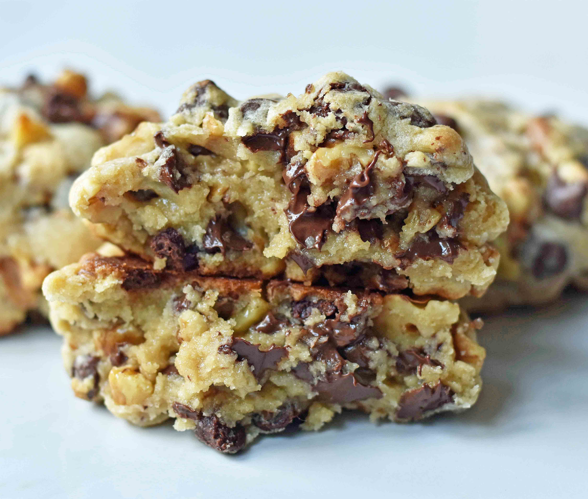

Chocolate Chip Walnut Cookies

Description
Sometimes, the urge to have a freshly-baked cookie is too strong.
And what kind of person would I be if I didn't have some frozen
cookie dough on hand to curve those cravings? Today, I'll be following
Melissa Stadler's recipe
for Chocolate Chip Walnut Cookies. She's modeled her cookies after those
sold at the popular Levain Bakery in New York City.
Ingredients
- 1 cup cold butter, cut into small cubes
- 1 cup brown sugar
- 1/2 cup granulated sugar
- 2 eggs
- 1 1/2 cups cake flour
- 1 1/2 cups flour
- 1 tsp cornstarch
- 3/4 tsp baking soda
- 3/4 tsp salt
- 2 cups chocolate chips
- 2 cups walnuts, roughly chopped
Steps
- Preheat oven to 410 degrees.
- In a large mixing bowl, cream together butter, brown
sugar, and sugar for 4 minutes or until creamy.
- Add eggs, one at a time, mixing well after each one.
- Stir in flours, cornstarch, baking soda, and salt. Mix
until just combined to avoid overmixing. Stir in
chocolate chips and walnuts.
- Separate dough into large balls and place on cookie
sheet. They are bigger than you think!
- Bake for 9-12 minutes or until golden brown on top. Let
them rest for at least 10 minutes to set.